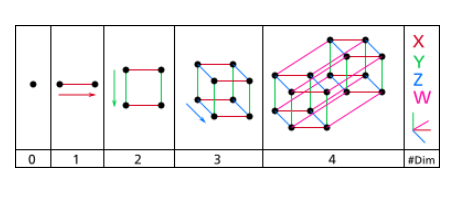

超立方体是立方体在高维空间内的拓展（其在 2 维情况下退化为正方形，1
维情况下退化成线段）。在理论计算机科学领域里，超立方体往往可以和 2 进制
编码联系到一起。对理论计算机科学颇有研究的 Will 自然也会对超立方体有着
自己的思考。

上图就是在 0～4 维空间内超立方体所对应的图形。显然我们可以把超立方
体的每个顶点看成一个点，每一条棱看成一条边，这样就会得到一个无向图，我
们称之为超立方图。
D维空间内的超立方图有 2D个点，我们把这些点从0到2D-1依次编号。
有一个有趣而重要的充要结论是：一定存在一种编号的方式，使得图中任意
两个有边相连的顶点的编号的 2进制码中，恰好有一位不同。
在 2维和3维空间内这个结论可以这样形象的理解：
对于 2维空间，我们只要把这个正方形放到第一象限内，使得 4个顶点的坐
标按逆时针顺序依次为(0,0)，(1,0)，(1,1)，(0,1)，然后再把坐标看成 2位2进制
数，依次将这 4个点编号为 0，1，3，2即可。
对于 3维空间，同样我们可以将立方体的一个顶点与原点重合，并使得所有
棱均平行于坐标轴，然后分别确定这8个点的坐标，最后把3维空间内的坐标看
成一个3位2进制数即可。对于D维空间，以此类推。
现在对于一个 N 个点M条边的无向图（每个点从 0到N-1编号），Will 希望
知道这个图是否同构于一个超立方图。
| F.A.Qs | Home | Discuss | ProblemSet | Status | Ranklist | Contest | 入门OJ | ModifyUser Xeonacid | Logout | 捐赠本站 |
|---|